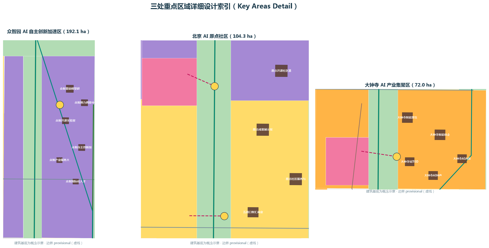
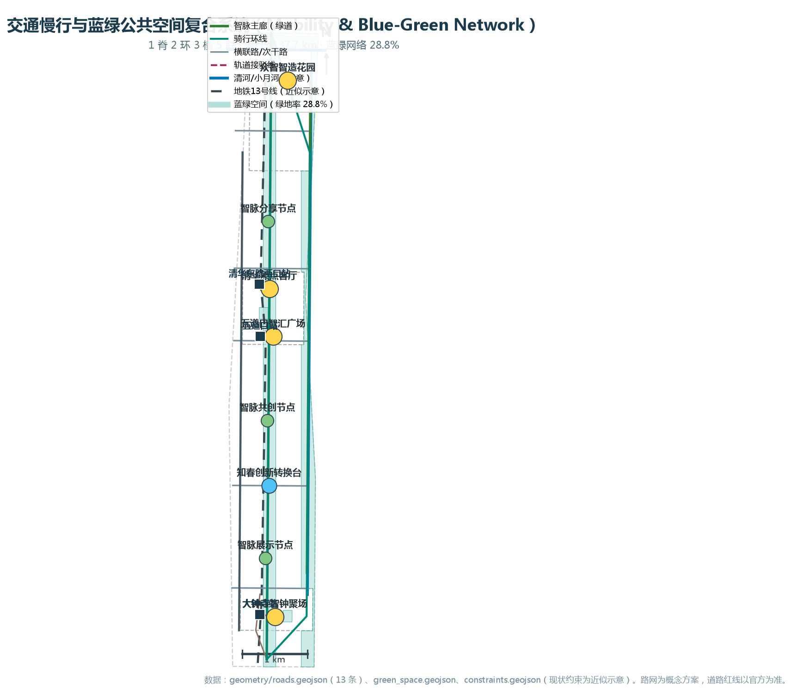

京张智脉——百年京张AI创新带城市设计概念方案
以'京张智脉'为总体概念，沿京张铁路遗址公园塑造一条贯穿南北的AI创新活力带：众智园全栈自主创新、AI原点社区策源转化、大钟寺智能原生新业态、中关村科技服务翼与小月河场景赋能翼协同，构建百年京张文化带、都市AI生活体验带与AI融合创新带。
京张智脉——百年京张AI创新带城市设计概念方案
设计依据与资料清单
本方案是面向"百年京张AI创新带城市设计国际方案征集"的正式（formal）AI 智能体提交包，包类型为 professional_design_package。方案的唯一主体文本是本文件 proposal.md，机器可读证据为 geometry/*.geojson、metrics.json、sources.json、assumptions.json、standard_matrix.json、design_depth_matrix.json 与 compliance_matrix.json，A3/A0 图纸与 visual/index.html 仅为人类可读的演示成果，不与机器可读数据冲突 [source:SITE-PACKAGE] [standard:PROJECT-OFFICIAL-ANNOUNCEMENT]。
**资料清单与用途分级**：方案引用以下公开或已清权资料，并按其用途分级使用 [source:SOURCE-REGISTRY]：
| 资料 | 来源/编号 | 用途分级 | |---|---|---| | 百年京张AI创新带城市设计国际方案征集资格预审公告（2026-05-09） | SRC-2026-BJ-GH-QUAL-PREANNOUNCEMENT | formal-ready：项目名称、三层范围、面积口径、设计任务（1.3-1.5 节） | | 面向全球智能体的开源征集任务书摘录（2026-05-18） | SRC-2026-0518-AGENT-OPEN-CALL-TASKBOOK | formal-ready：agent.1-agent.6 任务、共创宪章、边界语言 | | 《城市设计管理办法》（住建部 2017） | SRC-2017-MOHURD-URBAN-DESIGN-MEASURES | formal-ready：公共空间、城市风貌、高度体量风格色彩管控依据 | | 《城市、镇控制性详细规划编制审批办法》 | SRC-MOHURD-CONTROL-DETAILED-PLANNING | formal-ready：控规深度城市设计的编制深度要求 | | 《国土空间调查、规划、用途管制用地用海分类指南》（自然资源部 2023） | SRC-2023-MNR-LAND-USE-CLASSIFICATION | formal-ready：用地分类代码（07/05/08/12/14/16 等） | | "三区两翼"打造世界级AI集聚地（北京市科委、中关村管委会，2026-04-03） | SRC-2026-BJ-KW-THREE-AREAS-WINGS | 背景级：三区两翼产业语境 | | 三层范围与三处重点区临时粗略 polygon（仓库维护者 2026-06-05） | SRC-PROVISIONAL-BOUNDARIES-2026 | provisional-only：仅用于临时生成、可视化与自检，不作官方红线 |
**边界与资料缺口披露**：截至本包生成，仓库内无官方发布的精确 SITE_BOUNDARY 与 KEY_AREA 多边形，仅存在明确标记为 provisional 的粗略替代边界（brief/site-package/geometry/provisional_boundaries.geojson）[source:BOUNDARY-SOURCE]。本方案全部设计图层均在 provisional 总体设计范围（约 1141 公顷）内生成，并遵循"provisional 边界仅作虚线约束、设计意图为主导"的表达原则。官方 polygon 发布后，geometry/site_boundary.geojson、geometry/key_areas.geojson 及所有依赖面积重算的指标（尤其 site_area_sqm、green_ratio、public_space_ratio 与各类用地占比）必须复算 [metric:site_area_sqm] [source:KEY-AREA-SOURCE]。官方控规容积率、建筑高度、建筑密度、绿地率、退线等规划控制条件在公开站点包中缺失（见 brief/site-package/ranges/planning_limits.json），本方案以"概念建议 + 待确认"处理，不伪装为审定指标 [source:SITE-PACKAGE]。
**证据链组织**：正文每一设计判断均以 [source:...]（资料）、[standard:...]（标准）、[depth:...]（设计深度项）、[data:geometry/xxx.geojson#feature]（图层要素）、[metric:...]（指标）标注，与 compliance_matrix.json（23 项任务覆盖）、standard_matrix.json（6 项强制标准）、design_depth_matrix.json（15 项设计深度）一一对应 [depth:existing_conditions_diagnosis] [depth:risk_missing_data]。图面证据见本文件嵌入的 5 张核心图。

三层范围工作框架
依据资格预审公告 1.4 节，征集按统筹研究范围、总体设计范围、重点区域范围三个层次开展工作 [source:OFFICIAL-ANNOUNCEMENT] [standard:PROJECT-OFFICIAL-ANNOUNCEMENT]。三层范围在工作目标、设计深度与成果表达上逐级深化：
| 层级 | 官方面积口径 | 本包几何 | 工作目标 | 设计深度 | 对应章节 | |---|---|---|---|---|---| | 统筹研究范围 | 约 43.6 km²（北至北五环、东至京藏高速、南至西直门外大街、西至万泉河路） | constraints.geojson#PROV-RESEARCH-001（provisional） | 产业战略、三区两翼协同、未来城市形态研究 | 战略研究级 | 第三章 | | 总体设计范围 | 约 11.4 km² | site_boundary.geojson#PROV-SITE-001（provisional，计算面积 11,412,825.4 m² [data:geometry/site_boundary.geojson#PROV-SITE-001]） | 以城市更新为抓手，产业与空间深度融合 | 控规深度城市设计 | 第四章 | | 重点区域范围 | 约 368.4 公顷（三区合计，key_area_count=3 [metric:key_area_count]） | key_areas.geojson#PROV-KEY-001/002/003（provisional） | 三区精细化设计、拆改留与实施方案 | 规划综合实施方案深度 | 第五章 |
三层范围的空间关系是"产业战略 → 总体城市设计 → 重点片区详细设计"的逐级落实：统筹研究范围回答"带向何处去"，总体设计范围回答"带如何生长"，重点区域范围回答"三区如何落地" [depth:three_level_scope_framework]。对应图层与指标：land_use.geojson 覆盖总体设计范围全界且无缝无重叠（site_area_sqm 复算一致）[data:geometry/land_use.geojson#LU-001] [metric:site_area_sqm]，key_areas.geojson 承载三处重点区 [data:geometry/key_areas.geojson#PROV-KEY-001]，phasing.geojson 承载分期实施 [data:geometry/phasing.geojson#PHASE-001]。
**provisional 边界使用说明**：本包三处范围边界均为仓库维护者提供的 provisional 粗略替代（boundary_precision=provisional_rough，official_boundary=false），其用途限于临时生成、离线可视化与 intake 自检；不得作为官方红线、精确面积计算、法定规划控制或审批依据 [source:BOUNDARY-SOURCE]。官方 polygon 发布后，需替换 site_boundary.geojson 与 key_areas.geojson，并重算所有依赖面积与比例的指标（见 assumptions.json#A-BOUNDARY-001）。组织方数据缺口不阻断内容评分，但本包已完整披露精度限制。

统筹研究范围产业与未来城市研究
一带总体概念：京张智脉（Jing-Zhang AI Pulse）
**命名体系**（回应任务书 agent.1）[source:AGENT-TASKBOOK] [standard:PROJECT-AGENT-OPEN-CALL-TASKBOOK]：主名称取"京张智脉"四字——"京张"承接 1909 年詹天佑主持修建的中国第一条自主设计建造铁路（京张铁路）的历史原点，"智脉"指称人工智能时代的创新脉动；英文名 **JZ-AI Pulse（Belt of Intelligence）**。命名体系分层如下：
| 层级 | 名称 | 英文 | 说明 | |---|---|---|---| | 一带主名 | 京张智脉 | JZ-AI Pulse | 品牌主资产，国际传播用 | | 三区·北 | 众智园·智造花园 | Garden of Collective Intelligence | AI 全栈自主创新加速区 | | 三区·中 | AI 原点社区·原点客厅 | Origin Living Room | 近校型策源转化社区 | | 三区·南 | 大钟寺·智钟聚场 | AI Bell Forum | 智能原生新业态聚场 | | 两翼·西 | 中关村科技服务翼 | Service Wing | 资本、IP 与科技服务 | | 两翼·东 | 小月河场景赋能翼 | Scenario River | AI 场景试验与赋能 |
**Logo 与视觉识别方向**：以"铁轨 + 脉搏"为母题——将京张铁路的枕木与钢轨意象转化为一条持续脉动的波形轨道线，形成字母 "JZ" 的抽象组合；主色取"京张锈红（历史）"与"智脉青（未来）"双色系统，辅以"中关村蓝（创新）"点缀；中文字体建议使用定制无衬线字体，英文字体建议搭配等宽字族（monospace）呼应"代码"语义。Logo 为方向性概念，不包含未清权字体、图形、商标或肖像 [depth:overall_spatial_structure] [source:AGENT-TASKBOOK]。
**三大定位、五大功能与协同回路**：三大定位（百年京张文化带、都市AI生活体验带、AI融合创新带）分别由文化叙事系统（第六章）、场景体验系统（第七章）与产业创新系统（本部分）承载；五大功能（AI全栈自主创新体系、世界级AI创新生态、AI+场景赋能新范式、智能化AI活力城市、AI治理全球话语权）落到三区两翼：众智园承载"全栈自主 + 治理话语权"，AI 原点社区承载"世界级生态"，大钟寺承载"智能原生新业态"，中关村科技服务翼承载"要素全球化配置、中关村IP与资本赋能"，小月河场景赋能翼承载"AI+场景赋能与智能化活力城市" [source:THREE-AREAS-WINGS]。三区两翼形成"策源→孵化→加速→转化→服务→场景"的闭环回路（Origin → Incubate → Accelerate → Convert → Serve → Scenario），该回路即"智脉"的空间化表达 [depth:overall_spatial_structure]。
世界级 AI 创新生态：六城经验对照
回应任务书 agent.2（5-8 个全球 AI 创新生态案例）[source:AGENT-TASKBOOK]：以下六个全球创新街区的经验均为公开资料整理（列入 sources.json），仅作经验参照，不作统计口径承诺：
| 案例 | 关键机制 | 可转化为海淀智脉的经验 | |---|---|---| | 美国硅谷·帕洛阿尔托大学街 | 高校教授+资本+校友网络的近校型创新圈 | AI 原点社区"校区-街区-园区"融合、五道口节点 [data:geometry/public_space.geojson#PUB-NODE-03] | | 美国波士顿·Kendall Square | 生物医药/科技街区化更新、轨道 TOD | 大钟寺站四象限 TOD 一体化 [data:geometry/roads.geojson#ROAD-010]、更新街区化 | | 法国巴黎·Station F | 废旧车站改造为单体巨型孵化器 | 京张遗址公园沿线旧建筑转化为"创新车厢"场景 | | 新加坡·纬壹科技城 one-north | 花园城市 + 实验室街区 + 场景试验 | 智脉绿廊连续绿色体系与场景试验场 [data:geometry/land_use.geojson#LU-009] | | 中国深圳·深圳湾科技生态园 | 园区-社区-景区复合、产业生态集群 | 众智园花园型创新街区 [data:geometry/land_use.geojson#LU-003] | | 中国上海·张江科学城 | 大科学装置+企业+资本全链条 | 众智园全栈自主创新体系与算力节点 |
**AI 创新生态图谱与要素机制**：智脉生态由"五要素五机制"构成——土地（城市更新释放产业空间，land_use.geojson 科研用地占比 25.7% [metric:land_use_research_ratio]）、空间（智脉绿廊+三区+两翼的空间组织）、产业（AI 全栈：基础模型-算力-数据-开源-应用）、资金（中关村服务翼资本与知识产权服务 [data:geometry/land_use.geojson#LU-010]）、人才与场景（小月河翼场景试验场 [data:geometry/land_use.geojson#LU-009]）。以上均为概念机制建议，不构成招商承诺、投资额或产值承诺 [source:AGENT-TASKBOOK]。
面向 AI 的新型城市形态与未来城市畅想
围绕"AI 文化、AI 社会、AI 城市"三个层面（回应公告 1.5（1））[source:OFFICIAL-ANNOUNCEMENT]：**AI 文化**上，以"智脉"为符号系统串联京张铁路文化、中关村创新文化与开源文化；**AI 社会**上，提出"人机协作的公共生活"——AI 场景全部保留人工复核与退出机制（见第七章）；**AI 城市**上，提出"自适应、可进化的城市"：phasing.geojson 的近期-中期-远期分期即城市"学习进化"的机制化表达——留白用地（LU-017，约 9.4% [metric:land_use_green_ratio]）作为远期弹性空间，随产业演化动态供给 [depth:phasing_implementation]。可感知、可交互的"AI+交通"系统与连续无界的绿色空间体系见第八、九章。
总体设计范围城市更新与控规深度城市设计
产业目标与功能布局（回应公告 1.5（2））
总体设计范围（provisional，计算面积 11,412,825.4 m²）以城市更新为抓手，实现"产业与空间深度融合" [source:OFFICIAL-ANNOUNCEMENT] [depth:land_use_layout]。用地布局采用"一带一廊三区两翼"结构，17 个用地分区无缝覆盖全界（land_use.geojson，覆盖差 0 m²）[data:geometry/land_use.geojson#LU-001] [depth:overall_spatial_structure]：
| 用地大类（国标代码） | 面积占比 | 主要承载 | 对应分区 | |---|---|---|---| | 科研用地（0802） | 25.7% [metric:land_use_research_ratio] | AI 研发、开源实验室、创新平台 | LU-003/005/011 | | 绿地与开敞空间（1401/1403） | 28.2% [metric:land_use_green_ratio] | 智脉绿廊、清河滨水、小月河翼 | LU-001/002/009 | | 居住用地（0701/0702） | 26.5% [metric:land_use_residential_ratio] | 人才宜居社区、更新居住配套 | LU-006/012/013 | | 商业服务业用地（05） | 7.4% [metric:land_use_commercial_ratio] | 科技服务、智能原生消费 | LU-008/010 | | 道路用地（1207） | 约 4% | 智脉横联路 | LU-014/015/016 | | 文化用地（0803） | 约 2% | 清华园火车站文化客厅、大钟寺文化区 | LU-004/007 | | 留白用地（16） | 约 9% | 远期弹性供给 | LU-017 |
产业功能比例（概念建议，待控规确认）：创新产业空间（科研+产业服务）约 33%，生活空间（居住+社区服务）约 27%，蓝绿开敞约 28%，其余为道路与文化、留白。呼应海淀"1+X+1"产业体系，本方案将"AI+"垂直应用（AI+信软、AI+医疗、AI+教育、AI+法律、AI+生活服务）落到大钟寺与小月河翼的垂直应用重点区域 [source:THREE-AREAS-WINGS]。
城市更新总体框架与更新项目结构
更新逻辑采用"保留-改造-拆除-新建"四级分类（buildings.geojson 中 20 栋概念建筑，status 字段区分 proposed_new 与 retained_concept）[depth:retain_renovate_demolish] [data:geometry/buildings.geojson#BLG-011]：清华园火车站旧址等文保与历史要素以"保留+文化活化"为主（constraints.geojson#HER-001）；京张遗址公园两侧低效空间以"改造+植入创新功能"为主；危旧与低效产业空间按概念建议"拆除重建"为 AI 产业载体；留白用地远期弹性新建 [source:OFFICIAL-ANNOUNCEMENT]。更新项目清单 12 项见第十章 renewal_project_count [metric:renewal_project_count]。
**校区-园区-街区融合**：以 AI 原点社区为样板，提出"围墙软化、接口共构、慢行贯通"三策略——高校（清华、北大、中科院体系）策源成果通过原点客厅、成果转化楼（BLG-007/013）进入园区，园区服务反向支撑校区，五道口智汇广场（PUB-NODE-03）成为校区-街区公共界面 [data:geometry/public_space.geojson#PUB-NODE-03] [depth:three_key_area_detailed_design]。
建筑规模与开发强度（概念口径，待控规）
因公开站点包缺失控规容积率/高度/密度条件 [source:SITE-PACKAGE]，本方案不给出审定式建筑总规模；仅在三重点区内给出概念性建筑基底与形态意向（buildings.geojson，建筑基底合计 83,835.2 m² [metric:building_footprint_area_sqm]；概念高度 18-60 m，见各要素 height_m_concept）[depth:development_intensity_controls] [depth:height_massing_character]。所有数值为"概念建议 + 待确认"，不得作为审定指标 [source:AGENT-TASKBOOK]。
支撑 AI 发展的交通、轨道、市政与配套设施（回应公告 1.5（2））
交通组织见第八章详述；此处给出结构结论：沿智脉绿廊布置全步行/骑行"慢行脊"（ROAD-001，绿道；ROAD-013 骑行环线），大钟寺站、五道口站、清华东路西口站三处轨道站点均设 transit_connection 接驳线（ROAD-010/011/012）[data:geometry/roads.geojson#ROAD-010] [depth:traffic_rail_slow_parking]。市政与新型基础设施提出"三融合"概念：分布式能源、端侧算力与 AI 产业服务设施融入传统水电气热设施体系，具体承载力需以专项评估为准 [depth:municipal_new_infrastructure]。
京张遗址公园活力带与城市风貌（回应公告 1.5（2））
**智脉绿廊**（LU-002，约 130 m 宽、南北贯穿约 9.7 km）是本方案的核心空间资产：将京张遗址公园已实施区段向北延伸至清河、向南延伸至大钟寺，形成"一条脊、三段主题、八处节点"的活力带结构 [data:geometry/land_use.geojson#LU-002] [depth:blue_green_public_space]：
- 北段"智造"主题：上地-众智园段，接清河滨水带（LU-001），设众智智造花园（PUB-NODE-01）；
- 中段"原点"主题：清华园火车站-五道口段，设清华原点客厅（PUB-NODE-02）、五道口智汇广场（PUB-NODE-03）；
- 南段"回响"主题：知春-大钟寺段，设知春创新转换台（PUB-NODE-04）、大钟寺智钟聚场（PUB-NODE-05）；
- 跨五环、跨三环区域预留"上跨环路"景观节点概念，作为标志性城市景观节点深化方向 [source:OFFICIAL-ANNOUNCEMENT]。
**城市风貌基调**：提出"锈红记忆 + 青智未来"的城市基调——铁路历史构筑物保留锈红肌理，新建 AI 产业建筑采用青灰-白色系与模块化立面，屋顶形态鼓励"第五立面"绿化与设备一体化，建筑体量沿智脉绿廊退台控制（概念性引导，高度控制以官方为准）[depth:height_massing_character]。
重点区域详细设计
三处重点区域均达到规划综合实施方案的城市设计深度，逐区给出"定位 + 空间结构 + 建筑更新 + 交通慢行 + 公共空间 + AI 场景 + 实施风险"（回应公告 1.5（3）必选项与任务书 agent.3/agent.4）[source:OFFICIAL-ANNOUNCEMENT] [source:AGENT-TASKBOOK] [depth:three_key_area_detailed_design]。
众智园 AI 自主创新加速区（约 192.1 公顷，provisional）
**定位**：花园型 AI 自主创新街区——"智慧型、未来感、低碳绿色"的国家级 AI 集聚区，承载 AI 全栈自主创新体系与安全治理 [source:OFFICIAL-ANNOUNCEMENT]。**空间结构**：科研用地为主（LU-003）[data:geometry/land_use.geojson#LU-003]，沿清河布置滨水研发组团，中部布置智造花园（PUB-NODE-01）与研发中心群（BLG-001/002 基础模型研发与算力调度）[data:geometry/buildings.geojson#BLG-001]。**建筑更新**：以"改造低效厂房为实验室、新建研发楼宇"为概念方向，建筑形态鼓励模块化、可组合的实验室单元。**交通慢行**：结合北五环一体化规划提出对外交通优化方向（概念），内部以众智横联路（ROAD-007）与骑行环线连通 [data:geometry/roads.geojson#ROAD-007]。**公共空间**：智造花园 + 清河滨水带（LU-001）一体化设计，探索绿色空间服务 AI 发展的功能场景（户外测试、展示、交往）。**AI 场景**：国家人工智能平台展示、大模型安全评测中心、端侧算力试验场（详见第七章场景卡 S-03/S-06）。**实施风险**：现状权属与低效空间分布待核实，对外交通提升涉及五环一体化统筹，需专项研究 [depth:risk_missing_data]。
北京 AI 原点社区（约 104.3 公顷，provisional）
**定位**：近校型 AI 创新街区——围绕清华、北大、中科院原始创新策源，构建科技成果孵化与转化区 [source:OFFICIAL-ANNOUNCEMENT]。**空间结构**：北侧策源科研带（LU-005）、中部清华园火车站文化客厅（LU-004，结合 HER-001 清华园火车站旧址）[data:geometry/land_use.geojson#LU-004]、南侧人才宜居社区（LU-006）[data:geometry/land_use.geojson#LU-006]；核心节点清华原点客厅（PUB-NODE-02）承担成果展示发布（BLG-013）、开源社区基地（BLG-012）与青年人才公寓（BLG-010）[data:geometry/buildings.geojson#BLG-010]。**建筑更新**：低扰动、有机更新——以改造为主，保留清华园火车站文化意象（BLG-011 retained_concept）[data:geometry/buildings.geojson#BLG-011]。**交通慢行**：围绕清华东路西口站、五道口站开展一体化设计（ROAD-011/012），优化校区-园区慢行联系。**公共空间**：原点客厅、五道口智汇广场（PUB-NODE-03）与原点聚场口袋公园（GREEN-005）[data:geometry/green_space.geojson#GREEN-005]。**AI 场景**：成果转化加速营、人才特区服务（详见场景卡 S-02/S-05）。**实施风险**：校区接口协调复杂，低扰动更新的实施模式需与高校、社区共商 [depth:risk_missing_data]。
大钟寺 AI 产业集聚区（约 72.0 公顷，provisional）
**定位**：城市型 AI 创新街区——"更具世界影响力、城市发展活力"，聚焦智能体、智能终端、内容消费等 AI 原生与 AI+ 融合新业态 [source:OFFICIAL-ANNOUNCEMENT]。**空间结构**：商业服务业用地为主体（LU-008）[data:geometry/land_use.geojson#LU-008]，文化用地（LU-007）承载大钟寺 AI 钟声文化区（结合 HER-002 大钟寺古钟博物馆）[data:geometry/land_use.geojson#LU-007]；核心节点大钟寺智钟聚场（PUB-NODE-05）与 TOD 接驳中心（BLG-019）[data:geometry/buildings.geojson#BLG-019]。**建筑更新**：智能原生综合体（BLG-016，概念高度 60 m 为三区最高点，作为南部门户）[data:geometry/buildings.geojson#BLG-016]、智能体企业总部（BLG-017）、AI 内容消费街（BLG-018）。**交通慢行**：大钟寺站四象限步行连通设计（ROAD-010 接驳 + 大钟寺横联路 ROAD-003），完善非机动车停放等静态交通组织 [data:geometry/roads.geojson#ROAD-003]。**公共空间**：智钟聚场 + 回音绿地口袋公园（GREEN-006）[data:geometry/green_space.geojson#GREEN-006]。**AI 场景**：智能体应用总部、数据要素流通试验、AI 内容消费（场景卡 S-04/S-08/S-09）。**实施风险**：紧邻三环与轨道站点，施工扰动与交通组织需专项方案；规划绿地复合利用需与公园绿地管理要求衔接 [depth:risk_missing_data]。

AI 创新生态、人才画像与 AI+ 场景
用户画像（不少于 5 类，回应任务书 agent.3）
基于海淀 AI 人才、企业与居民结构，本方案定义 6 类用户画像，并映射到空间与服务 [source:AGENT-TASKBOOK] [depth:three_key_area_detailed_design]：
| 画像 | 核心需求 | 主要空间落点 | 服务场景 | |---|---|---|---| | P-1 AI 创业者 | 低成本启动、资本、算力、场景验证 | AI 原点社区孵化楼（BLG-008）、众智加速器（BLG-004） | 孵化营、Demo Day、场景沙盒 | | P-2 高校科研人员 | 成果转化、跨学科交流、试验条件 | 原点策源带（LU-005）、成果转化楼（BLG-007） | 转化加速营、原点论坛 | | P-3 开发者/开源贡献者 | 开放数据、算力、社区归属 | 开源社区基地（BLG-012）、智脉分享节点（PUB-NODE-06） | 黑客松、开源周、代码之夜 | | P-4 企业员工通勤者 | 通勤效率、午间活力、职住平衡 | 五道口智汇广场（PUB-NODE-03）、人才公寓（BLG-006/010） | 智汇早班车、午间市集 | | P-5 社区居民 | 公共服务、代际友好、数字包容 | 原点宜居社区（LU-006）、社区服务楼（BLG-014） | AI 健康亭、适老服务 | | P-6 国际访客/开发者 | 文化体验、国际活动、无障碍导览 | 清华原点客厅（PUB-NODE-02）、智钟聚场（PUB-NODE-05） | 双语导览、AI 钟声演出 |
AI 场景卡（不少于 10 张，其中不少于 3 张产业测试验证场景）
每张场景卡包含：空间位置、服务对象、运行数据边界、隐私边界、人工复核机制、运营主体建议、可视化图层、风险 [source:AGENT-TASKBOOK] [standard:PROJECT-AGENT-OPEN-CALL-TASKBOOK]。以下 12 张场景卡全部在 compliance_matrix.json 的 agent.3 条目中登记。
**S-01 智脉自动驾驶接驳（AI+交通）**：智脉绿廊内低速自动驾驶接驳环线，连接五道口、清华东路西口与大钟寺站。服务对象：通勤者、访客。空间：ROAD-001/013 沿线 [data:geometry/roads.geojson#ROAD-001]。数据边界：车辆运行轨迹脱敏；隐私边界：不采集行人生物特征；人工复核：安全员随车+远程接管；运营主体：交通运营主体+AI企业联合；风险：低速限定路段、天气预案 [depth:traffic_rail_slow_parking]。
**S-02 原点成果转化加速营（产业测试验证场景①）**：面向高校成果的"验证-转化-融资"全流程服务，含开源数据沙盒。空间：BLG-007/013 [data:geometry/buildings.geojson#BLG-007]。数据边界：非公开科研成果不纳入公共数据；人工复核：专家评审委员会；风险：成果权属与保密 [depth:retain_renovate_demolish]。
**S-03 大模型安全评测与标准验证场（产业测试验证场景②）**：众智园内面向大模型安全、对齐、可信评测的公共测试场，支撑标准制定与安全治理（呼应任务书 agent.2 众智园全栈自主体系）。空间：BLG-001/003 [data:geometry/buildings.geojson#BLG-003]。数据边界：评测数据集分级授权；人工复核：安全审计员+红队演练；风险：内容安全与评测公正性 [depth:development_intensity_controls]。
**S-04 智能体应用孵化与数字资产试验（产业测试验证场景③）**：大钟寺智能体企业总部（BLG-017）周边，探索智能体应用合规与数据要素流通机制（呼应公告 1.5（3）大钟寺数据要素与数字资产流通）。空间：LU-008 [data:geometry/land_use.geojson#LU-008]。数据边界：流通数据须匿名化与授权；人工复核：合规审查+投诉通道；风险：数据资产化政策未定，须以概念建议表述 [depth:risk_missing_data]。
**S-05 人才特区一站式服务**：AI 人才落户、住房、子女教育、签证等集成服务窗口（数字化+人工）。空间：BLG-010/014 [data:geometry/buildings.geojson#BLG-014]。隐私边界：最小化采集、本地化存储；人工复核：服务专员终审；风险：个人信息保护。
**S-06 户外机器人试验廊道（机器人场景）**：智脉绿廊北段（众智段）设置低速机器人配送、巡检、清洁的限定试验廊道，与慢行系统物理分隔或时段分隔。空间：LU-002 北段 [data:geometry/land_use.geojson#LU-002]。数据边界：不采集行人影像留存；人工复核：运营方巡检+紧急停止；风险：人机冲突，须限定低速与时段 [depth:traffic_rail_slow_parking]。
**S-07 智慧导览与城市叙事（AI+文化）**：清华原点客厅与智钟聚场部署多语种 AI 导览（基于公开史料与授权内容）。空间：PUB-NODE-02/05 [data:geometry/public_space.geojson#PUB-NODE-05]。数据边界：仅使用公开/授权史料；人工复核：内容审核委员会；风险：历史叙述准确性，须专家审定（呼应 agent.5 不得歪曲历史）[source:AGENT-TASKBOOK]。
**S-08 AI 内容消费街（AI+生活服务）**：大钟寺 AI 内容消费街（BLG-018）——数字内容体验、智能零售、无人便利店试点。空间：BLG-018 [data:geometry/buildings.geojson#BLG-018]。隐私边界：店内行为数据匿名聚合；人工复核：店员+客服；风险：未成年人内容分级。
**S-09 智能原生办公与会议综合体**：智钟聚场周边智能会议、多语言同传、AI 办公助理试点。空间：BLG-016/017 [data:geometry/buildings.geojson#BLG-016]。数据边界：会议内容默认不采集；人工复核：管理员+法律合规；风险：商业秘密保护。
**S-10 社区 AI 健康亭（AI+医疗）**：原点宜居社区设置 AI 健康咨询亭（血压、体脂、健康问答，对接正规医疗机构）。空间：BLG-014 周边 [data:geometry/buildings.geojson#BLG-014]。隐私边界：健康数据加密、就诊记录不入公共库；人工复核：社区医生+在线问诊；风险：不得替代诊疗，须显著标识。
**S-11 AI 学堂与科普基地（AI+教育）**：依托清华园火车站文化客厅开展 AI 科普、青少年编程营。空间：BLG-011/020 [data:geometry/buildings.geojson#BLG-011]。人工复核：教师+志愿者；风险：青少年内容安全。
**S-12 城市智能体治理沙盒（AI+治理）**：面向城市治理的智能体协作沙盒——仅使用公开资料与模拟数据推演城市方案（呼应本征集自身定位：AI agent 参与城市治理开源征集）。空间：智脉共创节点（PUB-NODE-07）与线上平台 [data:geometry/public_space.geojson#PUB-NODE-07]。数据边界：仅公开/清权数据；人工复核：治理专家+公众反馈渠道；风险：不得替代法定决策，输出须标注"概念建议" [standard:PROJECT-AGENT-OPEN-CALL-TASKBOOK]。
**场景-空间-运营映射**：12 张场景卡中 S-01/02/03/06 为产业测试验证场景（满足不少于 3 个要求）；全部场景卡映射至 public_space.geojson、buildings.geojson 与 land_use.geojson 要素，运营机制与活动体系见第十章 [metric:scenario_node_count] [depth:phasing_implementation]。所有测试验证场景均表述为"试点/试验方向"，不构成已批准运营 [source:AGENT-TASKBOOK]。
用地、建筑规模与拆改留方案
用地布局（对应 land_use.geojson）
用地布局遵循"以智脉绿廊为脊、三区为核、两翼为撑、留白为蓄"的原则，17 个分区无缝覆盖 provisional 总体设计范围（覆盖差 0 m²，见 design_depth_matrix.json#land_use_layout）[depth:land_use_layout] [data:geometry/land_use.geojson#LU-017]。科研用地（0802）25.7% [metric:land_use_research_ratio] 集中于众智园（LU-003）、原点策源带（LU-005）与中关村创新服务平台（LU-011）；商业服务业（05）7.4% [metric:land_use_commercial_ratio] 集中于大钟寺（LU-008）与科技服务带（LU-010）；居住（0701/0702）26.5% [metric:land_use_residential_ratio] 分布于原点宜居社区（LU-006）、品质提升区（LU-012）与更新居住配套（LU-013）；文化（0803）承载两处历史文化要素（LU-004/007）；道路（1207）为三条智脉横联路（LU-014/015/016）；留白（16）约 9% 为远期弹性 [depth:development_intensity_controls]。
建筑规模与拆改留
建筑基底以三重点区概念建筑群表达（buildings.geojson，20 栋，基底合计 83,835.2 m² [metric:building_footprint_area_sqm]）[depth:retain_renovate_demolish]：
| 区 | 保留（retained_concept） | 新建（proposed_new） | 概念高度区间 | |---|---|---|---| | 众智园 | — | 研发中心、算力调度、开源实验室、加速器、产业服务、人才公寓（BLG-001~006） | 30-54 m | | AI 原点 | 清华园火车站文化客厅（BLG-011） | 成果转化、孵化、策源复合体、人才公寓、开源基地、展示发布、社区服务、商业街坊（BLG-007~015） | 18-48 m | | 大钟寺 | — | 智能原生综合体、企业总部、内容消费街、TOD 接驳、钟声文化馆（BLG-016~020） | 18-60 m |
拆改留结论均为概念建议，权属、现状建筑与工程条件待核（assumptions.json#A-CONTROLS-001）；控规容积率、高度、密度缺失，故不给出审定式建筑总规模 [source:SITE-PACKAGE] [depth:development_intensity_controls]。
交通、轨道、市政与公共服务设施
道路微循环与慢行网络
本方案不改变现有主路网（京藏高速、北五环、西直门外大街、万泉河路、学院路/西土城路作为 constraints.geojson#ROAD-EX-01~05 现状约束保留）[data:geometry/constraints.geojson#ROAD-EX-01]，新增概念路网以"1 脊 2 环 3 横 5 联"组织 [depth:traffic_rail_slow_parking]：**1 脊**——智脉主廊慢行脊（ROAD-001 绿道）[data:geometry/roads.geojson#ROAD-001]；**2 环**——智脉骑行环线（ROAD-013）[data:geometry/roads.geojson#ROAD-013] 与知春-五道口内部慢行环；**3 横**——大钟寺（ROAD-003）、五道口（ROAD-005）、众智（ROAD-007）横联路 [data:geometry/roads.geojson#ROAD-005]；**5 联**——文化步道（ROAD-002）、小月河绿道（ROAD-008）、服务翼连廊（ROAD-009）与 3 条轨道接驳线（ROAD-010/011/012）[data:geometry/roads.geojson#ROAD-008]。概念路网总长 51,423.6 m [metric:road_length_m]，其中慢行类（绿道+步道+骑行）37,732.0 m [metric:slow_corridor_length_m]。
轨道站点一体化
依托地铁 13 号线（constraints.geojson#RAIL-001，近似示意线位）[data:geometry/constraints.geojson#RAIL-001] 沿智脉布置的大钟寺、知春路、五道口、清华东路西口等站点，开展站城一体化概念设计：大钟寺站四象限步行连通 + TOD 接驳中心（BLG-019）[data:geometry/buildings.geojson#BLG-019]，清华东路西口站-原点客厅无缝接驳（ROAD-012）。所有一体化方案为概念方向，站体改造与工程可行性需专项研究 [depth:traffic_rail_slow_parking] [source:OFFICIAL-ANNOUNCEMENT]。
市政与新型基础设施
提出"分布式能源、端侧算力、AI 产业服务设施与传统三大设施融合"概念：智脉绿廊下方预留综合管廊与算力光纤通道方向；公共建筑鼓励光伏一体化；端侧算力节点布局于三区产业建筑（概念）。承载力与工程条件均需专项评估，不作为实施承诺 [depth:municipal_new_infrastructure]。

蓝绿空间、公共空间与城市风貌
蓝绿空间体系
"一脊三带多园"蓝绿网络（对应 green_space.geojson，绿地率 28.8% [metric:green_ratio]）[depth:blue_green_public_space]：**一脊**——智脉绿廊（GREEN-001~003 连续公园绿地）[data:geometry/green_space.geojson#GREEN-001]；**三带**——清河滨水带（LU-001）[data:geometry/land_use.geojson#LU-001]、小月河绿带（LU-009）[data:geometry/land_use.geojson#LU-009]、文化步道带（ROAD-002）；**多园**——众智智造花园（GREEN-004）、原点聚场（GREEN-005）、大钟寺回音绿地（GREEN-006）三处口袋公园 [data:geometry/green_space.geojson#GREEN-004]。慢行系统与蓝绿系统复合：骑行环线（ROAD-013）串联清河-智脉-小月河，实现"连续无界"的绿色空间体系 [source:OFFICIAL-ANNOUNCEMENT]。
AI 公共空间、智能原生新业态与朝圣地标（回应任务书 agent.4）
**不少于 3 处 AI 朝圣地标/荣誉展示节点**（public_space.geojson，公共空间率 1.7% [metric:public_space_ratio]）：
| 地标 | 定位 | 空间载体 | 荣誉展示功能 | |---|---|---|---| | 清华原点客厅 | "中国自主创新原点"叙事锚点 | PUB-NODE-02，结合清华园火车站旧址（HER-001）[data:geometry/public_space.geojson#PUB-NODE-02] | 中国铁路史+中关村创新史+AI 里程碑荣誉墙 | | 大钟寺智钟聚场 | "AI 时代钟声"文化地标 | PUB-NODE-05，结合大钟寺古钟博物馆（HER-002）[data:geometry/public_space.geojson#PUB-NODE-05] | 年度 AI 里程碑"敲钟"仪式、全球开发者荣誉名录 | | 众智智造花园 | "全栈自主"产业朝圣地 | PUB-NODE-01 [data:geometry/public_space.geojson#PUB-NODE-01] | 开源贡献榜、国家平台成果展示 |
另有五道口智汇广场（PUB-NODE-03）作为"校区-街区"荣誉展示节点、知春创新转换台（PUB-NODE-04）作为创新枢纽节点，与三处朝圣地标共同构成"5 节点"荣誉展示体系。**公共空间组件库**（概念）：智脉灯柱（信息+导航）、智慧座椅（充电+空气质量）、可编程地面（投影互动）、模块化展亭（活动复用）、无障碍导览柱——组件全部遵循"可人工关闭、数据最小化、本地化处理"原则，不构成过度监控 [source:AGENT-TASKBOOK]。
城市风貌与历史文化展示
城市基调为"锈红记忆 + 青智未来"（详见第四章）；历史展示以京张铁路文化（清华园火车站、铁路遗址线形）、中关村创新文化（电子一条街到 AI 原点的叙事）与 AI 新文化（开源、智能体、大模型）三层叠加，通过导视系统、地面铺装叙事线与文化步道（ROAD-002）串联 [depth:blue_green_public_space] [source:AGENT-TASKBOOK]。风貌控制为概念引导，高度/强度以官方控规为准。
更新项目清单、实施政策与分期计划
更新项目清单（12 项，对应 phasing.geojson、renewal_project_count 与设计深度项 renewal_project_list）[depth:renewal_project_list]
| 序号 | 项目 | 位置 | 类型 | 依赖条件 | 实施主体建议 | 分期 | |---|---|---|---|---|---|---| | R-01 | 智脉绿廊样板段（五道口-清华东） | LU-002 中段 [data:geometry/land_use.geojson#LU-002] | 公共空间活化 | 慢行断点协调 | 区政府+轨道运营方 | 近期 | | R-02 | 清华原点客厅活化 | PUB-NODE-02 [data:geometry/public_space.geojson#PUB-NODE-02] | 文化更新 | 文保审批 | 文旅+社区 | 近期 | | R-03 | 原点成果转化楼群 | BLG-007/013 [data:geometry/buildings.geojson#BLG-007] | 新建产业载体 | 高校接口协议 | 平台公司+高校 | 近期 | | R-04 | 五道口智汇广场改造 | PUB-NODE-03 [data:geometry/public_space.geojson#PUB-NODE-03] | 街区更新 | 交通组织方案 | 街道+企业 | 近期 | | R-05 | 大钟寺 TOD 接驳中心 | BLG-019 [data:geometry/buildings.geojson#BLG-019] | 站城一体化 | 轨道工程专项 | 轨道+开发主体 | 近期 | | R-06 | 智钟聚场与钟声文化馆 | PUB-NODE-05、BLG-020 [data:geometry/buildings.geojson#BLG-020] | 文化+商业 | 文保衔接 | 文化运营方 | 近期 | | R-07 | 众智智造花园与研发中心群 | PUB-NODE-01、BLG-001~003 [data:geometry/buildings.geojson#BLG-001] | 新建产业园区 | 低效用地收储 | 园区运营主体 | 近期 | | R-08 | 智脉绿廊全线贯通 | LU-002 全线 | 公共空间 | 跨环节点方案 | 区政府+市级部门 | 中期 | | R-09 | 小月河场景试验场 | LU-009/1403 [data:geometry/land_use.geojson#LU-009] | 场景设施 | 河道管理衔接 | 场景运营联合体 | 中期 | | R-10 | 中关村科技服务翼连廊 | ROAD-009 [data:geometry/roads.geojson#ROAD-009] | 交通+服务 | 沿线更新协调 | 街道+企业 | 中期 | | R-11 | 骑行环线与慢行脊 | ROAD-001/013 [data:geometry/roads.geojson#ROAD-013] | 慢行系统 | 道路红线协调 | 交通部门 | 中期 | | R-12 | 留白用地弹性开发 | LU-017 [data:geometry/land_use.geojson#LU-017] | 远期储备 | 产业演化研判 | 区政府统筹 | 远期 |
实施政策与分期计划
分期对应 phasing.geojson 三阶段 [depth:phasing_implementation] [data:geometry/phasing.geojson#PHASE-001]：**近期（2026-2028）**三区核心与智脉样板段（PHASE-001，即三处重点区，约 368.4 公顷）；**中期（2028-2031）**智脉全线贯通与两翼成型（PHASE-002）；**远期（2031-2035）**留白弹性区（LU-017）随产业演化动态供给。政策建议（概念）：低效产业用地更新激励、AI 场景开放"负面清单+沙盒"、人才特区服务集成、开发者社区公共预算机制——均为深化方向，不构成已确定政府安排 [source:AGENT-TASKBOOK]。
全球 AI 创新活动体系与长期运营设计（回应任务书 agent.6）
**年度活动体系**（概念）：春·智脉 AI 周（开源+发布）、夏·原点开发者大会与黑客松、秋·智钟国际论坛（治理与标准）、冬·钟声跨年 AI 艺术节；叠加每月"智脉开放日"。**活动品牌与传播视觉**：统一使用"京张智脉 JZ-AI Pulse"品牌体系（第三章命名/Logo），活动子品牌如"Origin Talks""Bell Ring Ceremony"。**开发者社区运营**：开源社区基地（BLG-012）[data:geometry/buildings.geojson#BLG-012] 提供开放工位、算力券、数据沙盒（S-02），社区贡献者纳入荣誉名录（PUB-NODE-01 荣誉墙）。**场景开放运营**：S-01~S-12 场景卡按"申请-评审-试点-评估"开放，人工复核贯穿全程。**公共体验与城市地标运营**：朝圣地标（PUB-NODE-01/02/05）实行"公益为主+特许运营"双轨。**国际传播与招引转化**：以"中国第一条自主铁路遇见世界下一代智能"为核心传播叙事（第六章），通过活动-社区-场景-服务四步路径将全球开发者、企业与人才转化为落地主体 [depth:phasing_implementation]。全部活动与运营安排为概念建议，不得表述为已确定安排或政府承诺 [source:AGENT-TASKBOOK]。
指标体系、面积复算与合规矩阵
核心指标体系
本方案指标分为"几何复算类"与"方向目标类"两类（metrics.json 全部登记）[depth:metrics_recalculation]：
| 指标 | 值 | 类型 | 含义与设计支撑 | |---|---|---|---| | site_area_sqm | 11,412,825.4 | 几何复算 [metric:site_area_sqm] | provisional 总体设计范围计算面积（官方文本口径 11,400,000） | | green_ratio | 0.288 | 几何复算 [metric:green_ratio] | 绿地率 28.8%，支撑人才向往的连续蓝绿环境（智脉绿廊+清河+小月河+口袋公园） | | public_space_ratio | 0.017 | 几何复算 [metric:public_space_ratio] | 公共空间率 1.7%（5 地标+3 活力节点），支撑创新交往与朝圣体验 | | land_use_research_ratio | 0.257 | 几何复算 [metric:land_use_research_ratio] | 科研用地 25.7%，产业空间供给支撑"AI 全栈自主" | | building_footprint_area_sqm | 83,835.2 | 几何复算 [metric:building_footprint_area_sqm] | 三区概念建筑基底，非现状测绘 | | road_length_m / slow_corridor_length_m | 51,423.6 / 37,732.0 | 几何复算 [metric:road_length_m] | 概念路网与慢行网络规模 | | scenario_node_count | 8 | 几何复算 [metric:scenario_node_count] | 公共空间节点承载 12 张场景卡 | | renewal_project_count | 12 | 清单统计 [metric:renewal_project_count] | 更新项目清单（第十章） | | official_site_area_sqm | 11,400,000 | 官方口径 [metric:official_site_area_sqm] | 公告文本面积，非 polygon 计算 | | ai_innovation_index_target | 待官方口径 | 方向目标（unknown）[metric:ai_innovation_index_target] | AI 创新指数为方向性讨论，不设伪造数值 | | floor_area_ratio / building_height_m | 待控规 | 数据缺口（unknown）[metric:floor_area_ratio] | 官方控规条件缺失，见 planning_limits.json |
面积复算与合规覆盖
全部几何类指标由 geometry/*.geojson 在 EPSG:4548 下复算，site_boundary.geojson 计算面积与官方文本口径偏差约 0.1%（provisional 边界所致，已披露）[depth:metrics_recalculation]；provisional polygon 发布后需复算（assumptions.json#A-BOUNDARY-001）。合规覆盖：compliance_matrix.json 覆盖公告任务 17 项（1.3.1~1.5.3.3）与智能体任务 6 项（agent.1~agent.6），全部 mandatory=true；standard_matrix.json 覆盖 6 项强制标准；design_depth_matrix.json 覆盖 15 项设计深度，全部 required=true 且状态 complete/data_gap 如实标注 [standard:PROJECT-OFFICIAL-ANNOUNCEMENT] [standard:PROJECT-AGENT-OPEN-CALL-TASKBOOK] [standard:MOHURD-URBAN-DESIGN-MEASURES] [standard:MOHURD-CONTROL-DETAILED-PLANNING] [standard:MNR-LAND-USE-CLASSIFICATION-GUIDE] [standard:MOHURD-ARCH-DESIGN-DEPTH-2016]。

风险、版权与合规说明
**资料合法性**：本方案仅使用公开或已清权资料（sources.json 逐项登记），来源中不含任何非公开图件或内部材料；provisional 边界明确标注且不冒充官方红线 [source:SOURCE-REGISTRY]。**版权授权**：logo、命名、图文均为本智能体原创概念，未使用未清权字体、商标、肖像或受版权保护素材；嵌入图片由本方案几何与指标生成（assets/figures/*.png），版权声明见 report/copyright_statement.md。**隐私保护**：全部 AI 场景遵守数据最小化、匿名化与人工复核（第七章场景卡逐张标注隐私边界），不存在过度监控或不可人工复核的场景 [source:AGENT-TASKBOOK]。**AI 生成责任**：本包由 AI 智能体生成，人类贡献者（hotraygroup 署名）对内容负责；生成方式、模型与限制在 agent.json 披露。**禁用表述**：本方案不包含任何形式的官方审定结论、实施承诺或投资承诺表述；全部空间建议均为概念建议、参考方案或供专业团队深化的材料 [standard:PROJECT-AGENT-OPEN-CALL-TASKBOOK]。**待补资料**：官方精确边界、控规控制条件、现状建筑与权属、工程条件（见 assumptions.json 与 missing-data.md 对应项）[depth:risk_missing_data]。**专业复核需求**：正式审定前须由城市规划、交通、市政、文保专业团队复核。
参考资料
以下为本方案机器可读证据引用清单，正文引用语法与 compliance_matrix.json、standard_matrix.json、design_depth_matrix.json 一一对应 [source:SITE-PACKAGE] [source:SOURCE-REGISTRY] [source:OFFICIAL-ANNOUNCEMENT] [source:AGENT-TASKBOOK] [source:BOUNDARY-SOURCE] [source:KEY-AREA-SOURCE] [source:THREE-AREAS-WINGS] [source:MOHURD-URBAN-DESIGN-MEASURES] [source:MOHURD-CONTROL-DETAILED-PLANNING] [source:MNR-LAND-USE-CLASSIFICATION] [source:MOHURD-ARCH-DESIGN-DEPTH-2016] [standard:PROJECT-OFFICIAL-ANNOUNCEMENT] [standard:PROJECT-AGENT-OPEN-CALL-TASKBOOK] [standard:MOHURD-URBAN-DESIGN-MEASURES] [standard:MOHURD-CONTROL-DETAILED-PLANNING] [standard:MNR-LAND-USE-CLASSIFICATION-GUIDE] [standard:MOHURD-ARCH-DESIGN-DEPTH-2016] [depth:metrics_recalculation] [metric:site_area_sqm]：
brief/site-package/design_brief.jsonbrief/site-package/allowed_design_space.jsonbrief/site-package/agent_taskbook.jsonbrief/site-package/sources.jsonbrief/site-package/geometry/provisional_boundaries.geojsonbrief/site-package/ranges/planning_limits.jsonbrief/site-package/standards/standards.json与standards/references/*.mddata/source_registry.jsonbrief/site-package/schemas/*.jsondocs/formal-submission-guide.md